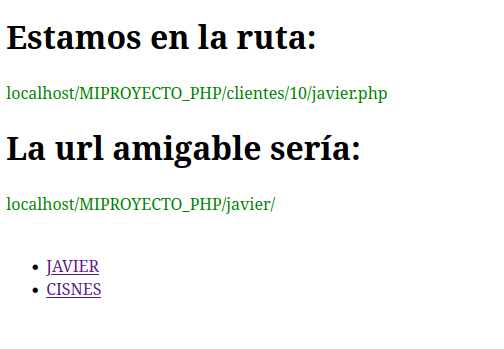

XAMPP es un paquete de software libre desarrollado por Apache Friends, que contiene diferentes software libres como el gestor de bases de datos (MySQL/MariaDB), un servidor web (Apache), interpretes para los lenguajes de programación PHP y Perl.
Xampp contiene abreviaturas de las aplicaciones que utiliza donde la "X" significa multiplataforma, la "A" significa Apache, la "M" MySQL, la primera "P" PHP y finalmente la segunda "P" significa Perl. Está bajo la licencia GNU, es fácil de usar, está disponible para diferentes sistemas operativos como Windows, MacOs y distribuciones de Linux.
CaracterísticasFácil instalación e integración con Apache, MySql y PHP.
Es rápido de entender y de usar de manera local.
No usa garantía implícita de su mercadibilidad.
No se puede usar MySql en consola, se utiliza PhpMyAdmin para administrar las bases de datos.
Imagen tomada de: Wikipedia
Imagen tomada de: www.ejemplocodigo.com
Imagen tomada de: www.ejemplocodigo.com
EcuRed. (s. f.). XAMPP - EcuRed. Recuperado 22 de marzo de 2022, de https://www.ecured.cu/XAMPP
V.M. (s. f.). Download XAMPP. Apache Friends. Recuperado 22 de marzo de 2022, de https://www.apachefriends.org/es/download.html
Diaz, D. (2021, 28 marzo). Qué Es Xampp Usos, Características, Opiniones, Precios. Mundobytes. Recuperado 22 de marzo de 2022, de https://mundobytes.com/xampp/
Demos. (2016, 27 junio). EjemploCodigo. Recuperado 23 de marzo de 2022, de https://ejemplocodigo.com/demos/?id=419&filename=ejemplo&tipo=php
{kind=link}